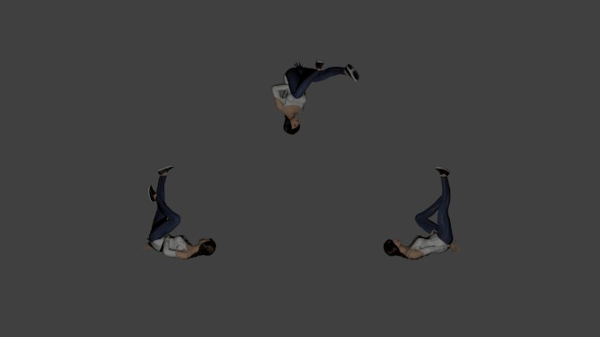

<!DOCTYPE html>
<html lang="en">
<head>
    <meta charset="UTF-8">
    <title>xTitle</title>
    <link href="//vjs.zencdn.net/5.19/video-js.min.css" rel="stylesheet">
    <script src="//vjs.zencdn.net/5.19/video.min.js"></script>
</head>
<body style="margin-top: 0; margin-left: 0; margin-bottom: 0; margin-right: 0; background-color: #343333">
<!--!-->
<video id="my-player">
    <source src="LeonidStandUp.mp4" type="video/mp4">
</video>
<script>
    var myPlayer = videojs('my-player');
    //var url = 'ws://localhost:8080/leonidserver/ws';
    var url = 'wss://leonid-da.herokuapp.com/ws';
    var ws = new WebSocket(url);
    setInterval(sendMessage, 5);
    function sendMessage(){
        if (ws.readyState === 1) {
            ws.send("");
            return;
        } else {
            console.log("wait for connection...")
        }
    }
    ws.onconnect = function(e) {
        console.log("connected");
    };
    ws.onerror = function (error) {
        console.log('WebSocket Error ' + error);
    };
    ws.onclose = function(event){
        console.log("Remote host closed or refused WebSocket connection");
        console.log(event);
    };
    ws.onmessage = function(message) {
        myPlayer.src({type: 'video/mp4', src: message.data});
        console.log(message.data);
        myPlayer.load();
        myPlayer.play();
    };
</script>
</body>
</html>